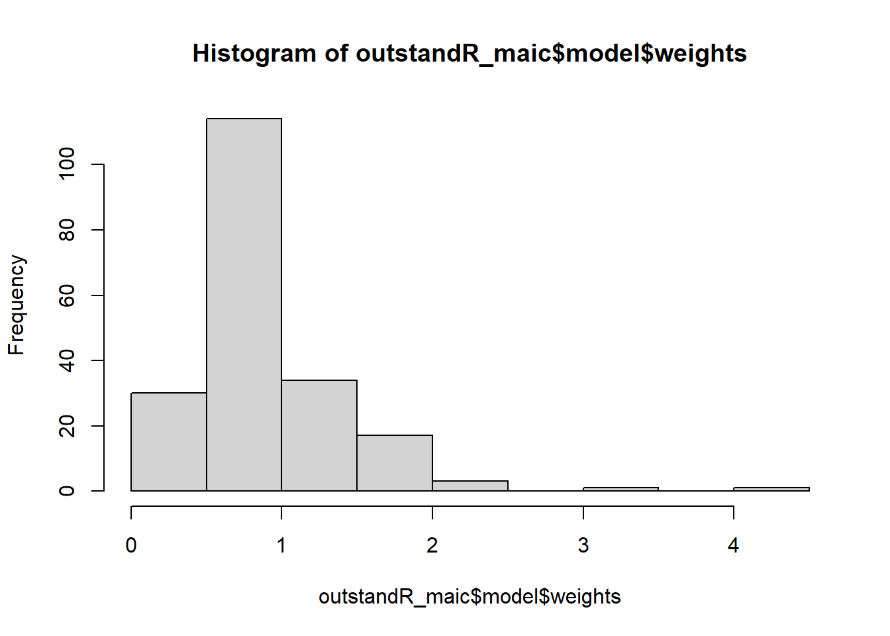

install.packages("outstandR",
repos = c("[https://statisticshealtheconomics.r-universe.dev](https://statisticshealtheconomics.r-universe.dev)",
"[https://cloud.r-project.org](https://cloud.r-project.org)"))Using the outstandR package
Using the outstandR package
This section gives a practical demonstration of the core functionality available in the package.
Available internal data sets
To illustrate the use of outstandR, we demonstrate its application with synthetic datasets. These are contained in the outstandR package and can be loaded via the data() function.
The naming convention that we use is:
<comparator><reference>_<level>_<outcome>_<covariates>
where:
- comparator and reference are the treatment arm names.
- level is either
IPDfor individual-level patient data orALDfor aggregate-level data. - outcome is binary or continuous.
- covariates is binary, continuous, or mixed.
For example, AC_IPD_binY_binX is the name of the data set for treatments \(A\) vs \(C\), patient-level data, and both binary-valued outcome and covariates.
Installation
First, install the development version from GitHub using R-universe.
Illustrative examples
Attach the package to the current environment.
library(outstandR)
library(dplyr) # Loaded for convenient printing if neededBinary outcome data
In the first example, consider binary outcome data and continuous covariates only. Load the aggregate level and individual-patient data into the environment.
data(AC_IPD_binY_contX) # AC individual-level patient data
data(BC_ALD_binY_contX) # BC aggregate-level dataInspecting the IPD, we can see that each row corresponds to an individual and it has four covariates: two effect modifiers only, and two prognostic factors only. These are all continuous valued and the outcome is binary values 0, 1.
# individual-level data
head(AC_IPD_binY_contX) id PF_cont_1 PF_cont_2 EM_cont_1 EM_cont_2 trt y true_eta
1 1 0.0826453 0.71645068 0.66422255 -0.09202652 A 0 -1.58891404
2 2 0.6957433 0.38608723 0.79875530 0.74880584 C 1 0.14986776
3 3 0.6516889 0.50572444 0.39944706 -0.07230380 A 0 -1.43868552
4 4 0.2165975 0.35783123 0.25957984 -0.55405590 A 0 -2.09172428
5 5 0.2605580 -0.05826527 -0.10696235 0.33762456 A 0 -2.13936317
6 6 0.1110818 0.64041589 0.04867791 0.34980415 C 1 -0.07910151Similarly, the ALD has the corresponding covariates but not as separate columns (wide format) but in a long format with all covariate names in the variable column. Notice that the treatment column trt is NA for the covariate because we assume that the covariate distribution is the same between treatment arms.
# aggregate-level data
print(BC_ALD_binY_contX)# A tibble: 16 × 4
variable statistic value trt
<chr> <chr> <dbl> <chr>
1 EM_cont_1 mean 0.651 <NA>
2 EM_cont_1 sd 0.391 <NA>
3 EM_cont_2 mean 0.592 <NA>
4 EM_cont_2 sd 0.416 <NA>
5 PF_cont_1 mean 0.653 <NA>
6 PF_cont_1 sd 0.371 <NA>
7 PF_cont_2 mean 0.583 <NA>
8 PF_cont_2 sd 0.437 <NA>
9 y mean 0.615 C
10 y sd 0.490 C
11 y sum 40 C
12 y mean 0.274 B
13 y sd 0.448 B
14 y sum 37 B
15 <NA> N 65 C
16 <NA> N 135 B The next thing is to define the formula which specifies the relationship between the covariates, treatments and outcome. For this example the regression is:
\[ \text{logit}(p) = \beta_0 + \beta^{PF}_{1} X^{PF}_{1} + \beta^{PF}_{2 }X^{PF}_{2} + (\beta_{trt} + \beta^{EM}_{1} X^{EM}_{1} + + \beta^{EM}_{2} X^{EM}_{2}) \mathbb{I}(trt = 1), \]
where \(\mathbb{I}()\) is the indicator function, taking value 1 when true and 0 otherwise. The corresponding R formula used by outstandR is independent of the particular type of data and so we do not include a link function at this stage.
# linear formula for the outcome model
lin_form <- as.formula("y ~ PF_cont_1 + PF_cont_2 + trt + trt:EM_cont_1 + trt:EM_cont_2")That is, the main effects are the prognostic factors (PF_cont_1 and PF_cont_2) and the treatment trt. The interaction terms are with the treatment defined as effect modifiers (EM_cont_1 and EM_cont_2).
Relative treatment effects
Let \(p_C\) be the proportion of events in the comparator treatment arm and \(p_B\) be the proportion of events in the reference treatment arm. For the logit link with binary data, the mean treatment effect is the log-odds ratio:
\[ \Delta_{BC} = \text{logit}(p_B) - \text{logit}(p_C) \]
with variance:
\[ \text{Var}(\Delta_{BC}) = \frac{1}{y_B} + \frac{1}{N_B - y_B} + \frac{1}{y_C} + \frac{1}{N_C - y_C}, \]
where \(y_t\) are the number of events and \(N_t\) are the total number of subjects for treatment \(t\).
Running outstandR()
Having completed the set-up steps, we are ready to proceed with performing the indirect treatment comparison with outstandR().
First, for an MAIC analysis use strategy_maic().
outstandR_maic <- outstandR(
ipd_trial = AC_IPD_binY_contX,
ald_trial = BC_ALD_binY_contX,
strategy = strategy_maic(
formula = lin_form,
family = binomial(link = "logit")
)
)To help with interpreting the results, outstandR includes a convenience print method.
print(outstandR_maic)Object of class 'outstandR'
ITC algorithm: MAIC
Model: binomial
Scale: log_odds
Common treatment: C
Individual patient data study: AC
Aggregate level data study: BC
Confidence interval level: 0.95
Contrasts:
# A tibble: 3 × 5
Treatments Estimate Std.Error lower.0.95 upper.0.95
<chr> <dbl> <dbl> <dbl> <dbl>
1 AB 0.600 0.239 -0.357 1.56
2 AC -0.844 0.136 -1.57 -0.120
3 BC -1.44 0.102 -2.07 -0.817
Absolute:
# A tibble: 2 × 5
Treatments Estimate Std.Error lower.0.95 upper.0.95
<chr> <dbl> <dbl> <lgl> <lgl>
1 A 0.245 0.00206 NA NA
2 C 0.427 0.00551 NA NA Similarly, the STC, G-computation and MIM analyses are:
# STC Analysis
outstandR_stc <- outstandR(
ipd_trial = AC_IPD_binY_contX,
ald_trial = BC_ALD_binY_contX,
strategy = strategy_stc(
formula = lin_form,
family = binomial(link = "logit")
)
)
# G-Computation (ML)
outstandR_gcomp_ml <- outstandR(
ipd_trial = AC_IPD_binY_contX,
ald_trial = BC_ALD_binY_contX,
strategy = strategy_gcomp_ml(
formula = lin_form,
family = binomial(link = "logit")
)
)
# G-Computation (Bayes)
# Note: refresh = 0 turns off iteration updates
outstandR_gcomp_bayes <- outstandR(
ipd_trial = AC_IPD_binY_contX,
ald_trial = BC_ALD_binY_contX,
refresh = 0,
strategy = strategy_gcomp_bayes(
formula = lin_form,
family = binomial(link = "logit")
)
)
# MIM Analysis
outstandR_mim <- outstandR(
ipd_trial = AC_IPD_binY_contX,
ald_trial = BC_ALD_binY_contX,
refresh = 0,
strategy = strategy_mim(
formula = lin_form,
family = binomial(link = "logit")
)
)Continuous outcome data
Analogous to the first example with binary outcomes and continuous covariates, we now extend this for the case of continuous outcomes and a mixture of binary and continuous covariates. The same steps are followed.
First, read in the data.
# individual-level data
data(AC_IPD_contY_mixedX)
head(AC_IPD_contY_mixedX) id X1 X2 X3 X4 trt y true_eta
1 1 0.3066158 0 1.0794085 0 A -2.3321553 -0.9789591
2 2 0.5961703 1 0.6164710 0 A -0.7473152 -0.8840576
3 3 0.1496635 1 0.5737457 0 A -1.2441749 -1.2402780
4 4 0.1393548 0 0.4687338 0 C -0.7905105 -0.1785051
5 5 0.5672248 0 0.5305725 0 A -3.3441703 -1.3985394
6 6 0.4897103 1 0.1289250 1 A -1.2286456 -0.3974177# aggregate-level data
data(BC_ALD_contY_mixedX)
print(BC_ALD_contY_mixedX)# A tibble: 14 × 4
variable statistic value trt
<chr> <chr> <dbl> <chr>
1 X1 mean 0.608 <NA>
2 X1 sd 0.436 <NA>
3 X2 prop 0.72 <NA>
4 X3 mean 0.598 <NA>
5 X3 sd 0.385 <NA>
6 X4 prop 0.51 <NA>
7 y mean 0.493 C
8 y sd 1.08 C
9 y sum 36.0 C
10 y mean -0.434 B
11 y sd 1.39 B
12 y sum -55.1 B
13 <NA> N 73 C
14 <NA> N 127 B The formats are the same as the previous example but now in the ALD the binary-valued covariates have statistic entry prop. X1 and X3 are continuous and X2 and X4 are binary.
The formula for this example is also a little more complicated. We shall assume that some of the covariate can be both prognostic factors and effect modifiers, so the regression is:
\[ y = \beta_0 + \beta_1 X_1 + \beta_2 X_2 + \beta_3 X_3 + (\beta_{trt} + \alpha_1 X_1 + \alpha_2 X_2 + \alpha_4 X_4 ) \mathbb{I}(trt = 1) \]
This corresponds to the R formula given by:
lin_form <- as.formula("y ~ X1 + X2 + X3 + trt + trt:(X1 + X2 + X4)")Relative treatment effect
Let \(\bar{y}_B\) be the mean in the comparator arm and \(\bar{y}_C\) be the mean in the reference arm. Then the mean treatment difference is simply:
\[ \Delta_{BC} = \bar{y}_B - \bar{y}_C \]
The variance of the relative treatment effect is:
\[ \text{Var}(\Delta_{BC}) = \frac{s_B^2}{N_B} + \frac{s_C^2}{N_C} \]
where \(N_t\) is the number of subjects for treatment arm \(t\).
Running outstandR()
A difference from the previous binary outcome data example is the family = gaussian(link = "identity") argument indicating a Normal linear regression. The full call to outstandR() is:
outstandR_maic <- outstandR(
ipd_trial = AC_IPD_contY_mixedX,
ald_trial = BC_ALD_contY_mixedX,
strategy = strategy_maic(
formula = lin_form,
family = gaussian(link = "identity")
)
)Interrogating the output:
str(outstandR_maic, max.level = 1)List of 7
$ results :List of 2
$ CI : num 0.95
$ ref_trt : chr "C"
$ scale : chr "mean_difference"
$ var_method: chr "sample"
$ family : chr "gaussian"
$ model :List of 3
- attr(*, "class")= chr [1:2] "outstandR" "list"print(outstandR_maic)Object of class 'outstandR'
ITC algorithm: MAIC
Model: gaussian
Scale: mean_difference
Common treatment: C
Individual patient data study: AC
Aggregate level data study: BC
Confidence interval level: 0.95
Contrasts:
# A tibble: 3 × 5
Treatments Estimate Std.Error lower.0.95 upper.0.95
<chr> <dbl> <dbl> <dbl> <dbl>
1 AB -0.174 0.127 -0.874 0.525
2 AC -1.10 0.0962 -1.71 -0.493
3 BC -0.926 0.0311 -1.27 -0.581
Absolute:
# A tibble: 2 × 5
Treatments Estimate Std.Error lower.0.95 upper.0.95
<chr> <dbl> <dbl> <lgl> <lgl>
1 A -0.567 0.0310 NA NA
2 C 0.534 0.0575 NA NA Count outcome data
First, read in and view the two data sets.
# individual-level data
data(AC_IPD_countY_contX)
head(AC_IPD_countY_contX) id PF_cont_1 PF_cont_2 EM_cont_1 EM_cont_2 trt y true_eta
1 1 -0.03120828 0.2000877 0.7946610 0.59843299 A 0 -1.69699568
2 2 0.55281009 0.8153046 0.7419797 0.02458683 A 0 -1.11665932
3 3 0.89707959 0.4406488 0.3849872 0.39262556 C 1 0.32724269
4 4 0.51890292 1.6089275 1.1134732 0.88850641 A 0 -0.09530927
5 5 0.49349123 0.9075975 0.6009318 -0.02910612 A 1 -1.17179280
6 6 0.48906050 0.2393630 0.4741692 0.45545576 C 1 -0.09509531# aggregate-level data
data(BC_ALD_countY_contX)
print(BC_ALD_countY_contX)# A tibble: 16 × 4
variable statistic value trt
<chr> <chr> <dbl> <fct>
1 EM_cont_1 mean 0.649 <NA>
2 EM_cont_1 sd 0.387 <NA>
3 EM_cont_2 mean 0.554 <NA>
4 EM_cont_2 sd 0.412 <NA>
5 PF_cont_1 mean 0.585 <NA>
6 PF_cont_1 sd 0.423 <NA>
7 PF_cont_2 mean 0.629 <NA>
8 PF_cont_2 sd 0.394 <NA>
9 y mean 1.65 C
10 y sd 1.52 C
11 y sum 94 C
12 y mean 0.469 B
13 y sd 0.730 B
14 y sum 67 B
15 <NA> N 57 C
16 <NA> N 143 B Let \(\lambda\) be the event rate, then the equation for the outcome regression for the count data is:
\[ \log(\lambda) = \beta_0 + \beta^{PF}_{1} X^{PF}_{1} + \beta^{PF}_{2 }X^{PF}_{2} + (\beta_{trt} + \beta^{EM}_{1} X^{EM}_{1} + + \beta^{EM}_{2} X^{EM}_{2}) \mathbb{I}(trt = 1). \]
Recalling that the log link is defined separately in the function call, the corresponding R formula is:
# linear formula for the outcome model
lin_form <- as.formula("y ~ PF_cont_1 + PF_cont_2 + trt + trt:EM_cont_1 + trt:EM_cont_2")Relative treatment effects
The default relative effect with the log link is the log relative risk, with mean:
\[ \Delta_{BC} = \ln(\bar{y}_C) - \ln(\bar{y}_B) \]
and variance:
\[ \text{Var}(\Delta_{BC}) = \frac{1}{N_B \bar{y}_B} + \frac{1}{N_C \bar{y}_C} \]
Running outstandR()
A difference from the previous outcome data examples is the family = poisson(link = "log") argument indicating a log linear regression.
outstandR_maic <- outstandR(
ipd_trial = AC_IPD_countY_contX, # EDITED
ald_trial = BC_ALD_countY_contX,
strategy = strategy_maic(
formula = lin_form,
family = poisson(link = "log")
)
)
print(outstandR_maic)Object of class 'outstandR'
ITC algorithm: MAIC
Model: poisson
Scale: log_relative_risk
Common treatment: C
Individual patient data study: AC
Aggregate level data study: BC
Confidence interval level: 0.95
Contrasts:
# A tibble: 3 × 5
Treatments Estimate Std.Error lower.0.95 upper.0.95
<chr> <dbl> <dbl> <dbl> <dbl>
1 AB 0.0875 0.0688 -0.427 0.601
2 AC -1.17 0.0432 -1.58 -0.763
3 BC -1.26 0.0256 -1.57 -0.945
Absolute:
# A tibble: 2 × 5
Treatments Estimate Std.Error lower.0.95 upper.0.95
<chr> <dbl> <dbl> <lgl> <lgl>
1 A 0.403 0.00371 NA NA
2 C 1.30 0.0334 NA NA User-specified outcome scales
By default, outstandR reports treatment effects on the scale corresponding to the regression model’s link function. However, health economic models often require parameters on specific scales, such as Risk Differences (RD) or Relative Risks (RR).
| Data Type | Model Metric | Mean Difference | Variance Component |
|---|---|---|---|
| Binary | Log Odds Ratio\(^\dagger\) | \(\text{logit}(p_B) - \text{logit}(p_C)\) | \(\frac{1}{y_t} + \frac{1}{N_t - y_t}\) |
| Risk Difference | \(p_C - p_B\) | \(\frac{p_t(1 - p_t)}{N_t}\) | |
| Probit Scale Difference | \(\text{probit}(p_C) - \text{probit}(p_B)\) | \(\frac{1}{y_t} + \frac{1}{N_t - y_t}\) | |
| Log RR (cloglog) | \(\ln(-\ln(1 - p_C)) - \ln(-\ln(1 - p_B))\) | \(\frac{1}{y_t} - \frac{1}{N_t}\) | |
| Log RR (Log Link) | \(\ln(p_C) - \ln(p_B)\) | \(\frac{1}{y_t} - \frac{1}{N_t}\) | |
| Count | Log Relative Risk\(^\dagger\) | \(\ln(\bar{y}_C) - \ln(\bar{y}_B)\) | \(\frac{1}{N_t \bar{y}_t}\) |
| Rate Difference | \(\bar{y}_C - \bar{y}_B\) | \(\frac{\bar{y}_t}{N_t}\) | |
| Delta \(z\) (Signal-to-noise) | \(\sqrt{\bar{y}_C} - \sqrt{\bar{y}_B}\) | \(\frac{1}{4 N_t \bar{y}_t}\) | |
| Continuous | Mean Difference\(^\dagger\) | \(\bar{y}_B - \bar{y}_C\) | \(\frac{s_t^2}{N_t}\) |
The scale argument in outstandR() allows users to request these alternative summary statistics directly. For example, to obtain a risk difference instead of the default log-odds ratio for the binary outcome analysis:
# Reloading the binary data for this example
data(AC_IPD_binY_contX)
data(BC_ALD_binY_contX)
lin_form <- as.formula("y ~ PF_cont_1 + PF_cont_2 + trt + trt:EM_cont_1 + trt:EM_cont_2")
outstandR_maic_rd <- outstandR(
ipd_trial = AC_IPD_binY_contX,
ald_trial = BC_ALD_binY_contX,
strategy = strategy_maic(
formula = lin_form,
family = binomial(link = "logit")
),
scale = "risk_difference" # instead of default log-odds ratio
)
print(outstandR_maic_rd)Object of class 'outstandR'
ITC algorithm: MAIC
Model: binomial
Scale: risk_difference
Common treatment: C
Individual patient data study: AC
Aggregate level data study: BC
Confidence interval level: 0.95
Contrasts:
# A tibble: 3 × 5
Treatments Estimate Std.Error lower.0.95 upper.0.95
<chr> <dbl> <dbl> <dbl> <dbl>
1 AB 0.168 0.442 -1.14 1.47
2 AC -0.173 0.00685 -0.336 -0.0110
3 BC -0.341 0.436 -1.63 0.952
Absolute:
# A tibble: 2 × 5
Treatments Estimate Std.Error lower.0.95 upper.0.95
<chr> <dbl> <dbl> <lgl> <lgl>
1 A 0.247 0.00200 NA NA
2 C 0.421 0.00539 NA NA Robust variance estimation
Standard errors in population-adjusted analyses can be sensitive to model misspecification. Users can request robust (sandwich) standard errors by setting the var_method argument to "sandwich".
The following example demonstrates how to compare the naive model-based standard error with the robust sandwich estimate for an STC analysis:
# 1. Standard STC analysis (Model-based variance)
stc_naive <- outstandR(
ipd_trial = AC_IPD_binY_contX,
ald_trial = BC_ALD_binY_contX,
strategy = strategy_stc(formula = lin_form, family = binomial()),
var_method = "sample") # Default
# 2. STC with Robust Variance (Sandwich estimator)
stc_robust <- outstandR(
ipd_trial = AC_IPD_binY_contX,
ald_trial = BC_ALD_binY_contX,
strategy = strategy_stc(formula = lin_form, family = binomial()),
var_method = "sandwich")
# Compare standard errors
stc_naive$contrasts$varNULLstc_robust$contrasts$varNULLUser-defined covariate distributions in G-computation
By default, the simulation step in G-computation assumes that covariates in the target population follow a multivariate normal distribution. outstandR allows users to specify alternative marginal distributions via the marginal_distns argument.
The package automatically parameterizes these distributions using the summary statistics available in the ALD (e.g., converting mean/sd to Gamma shape/rate).
# This example requires datasets with specific columns (age/sex)
# We will simulate the data structure for demonstration if not in current environment
# (Assuming AC_IPD and BC_ALD are loaded as generic placeholders here)
# 1. Define the target distributions
# We specify "gamma" for age and "binom" for sex.
# Covariates not listed (like 'bmi') default to "norm".
my_distns <- c(age = "gamma", sex = "binom")
# 2. Run G-computation
# automatically converts ALD mean/sd to shape/rate for 'age'
# Note: This code block requires the specific AC_IPD/BC_ALD datasets
# containing 'age' and 'sex' columns to run successfully.
# outstandR_gcomp_custom <- outstandR(...)Manual parameter specification
There are scenarios where manual specification via the marginal_params argument is necessary, such as sensitivity analysis.
# 1. Define the distribution forms
my_distns <- c(age = "gamma", sex = "binom")
# 2. Manually specify parameters for 'age' (mean=70, sd=10.5)
# Note: We convert mean=70/sd=10.5 to shape/rate manually
# or pass them if we already know the specific shape/rate we want
target_mean <- 70
target_sd <- 10.5
my_params <- list(
age = list(shape = (target_mean/target_sd)^2,
rate = target_mean/(target_sd^2)))
# 3. Run G-computation with manual override
# outstandR_sens <- outstandR(
# ipd_trial = AC_IPD,
# ald_trial = BC_ALD,
# strategy = strategy_gcomp_ml(
# formula = lin_form,
# marginal_distns = my_distns,
# marginal_params = my_params, # Overrides ALD for 'age'
# N = 5000))Model diagnostics
While outstandR() focuses on estimation, assessing model fit is crucial. For an MAIC analysis, we can inspect the distribution of weights to check for outliers or near-zero effective sample sizes.
# Check Effective Sample Size
print(outstandR_maic$model$ESS) ESS
151.053 # Histogram of weights
hist(outstandR_maic$model$weights)
Similarly, for G-computation, users can extract the fitted model to check residuals or inspect MCMC convergence.
# Extract stanfit object
stan_obj <- outstandR_gcomp_bayes$model$fit
# Use external package for diagnostics
library(bayesplot)
mcmc_trace(stan_obj, pars = c("alpha", "beta"))